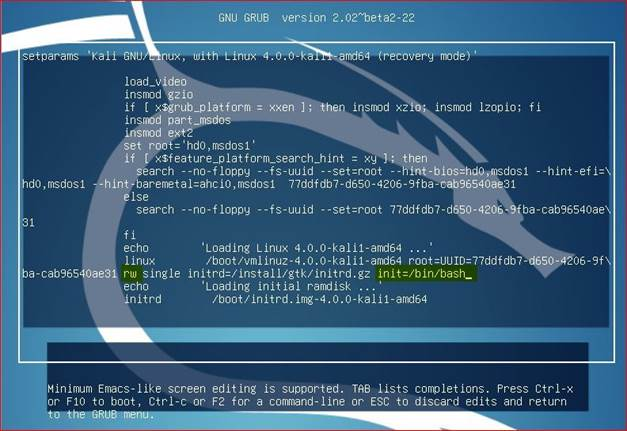
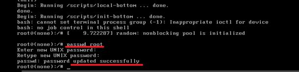

How to Reset Lost Password of Kali Linux
In this post, I will simply show you how to reset forgotten password of Kali Linux and hope it help you reset the lost password of Kali Linux easily. I have simply explained in the bellow step by step article or watch the video tutorial at the end of this post if you do not like reading. So follow the Kali Linux 2.0 password reset article.
1. Boot your Kali system and let the GNU Grub page to appear.
2. On the GNU GRUB page selects the *Advanced options for Kali GNU/Linux option by down arrow key and press enter.
3. Now simply select the second one Recovery mode option and press E key to go to recovery mode of Kali Linux.
4. To modify it just change read-only mode (ro) to rw (write mode) and add init=/bin/bash like below screenshot then press F10 to reboot the Kali Linux.

5. After rebooting the Kali Linux system, it will bring you the bellow screen to reset Kali Linux password.

All Done